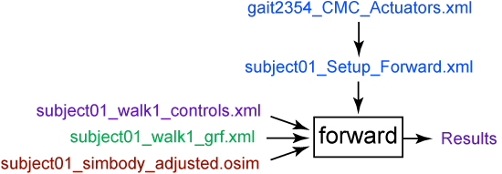

Given the controls (e.g., muscle excitations) computed by the Computed Muscle Control (CMC) or another approach, the Forward Dynamics Tool can drive a forward dynamic simulation. A forward dynamics simulation is the solution (integration) of the differential equations that define the dynamics of a musculoskeletal model. By focusing on specific time intervals of interest, and by using different analyses, more detailed biomechanical data for the trial in question can be collected.
To launch the Forward Dynamics Tool select Forward Dynamics… from the Tools menu. The Forward Dynamics Tool dialog, like all other OpenSim tools, operates on the Current Model open and selected in OpenSim.
Overview
The figure shows the required inputs and outputs for the Forward Dynamics Tool. Each is described in more detail in the following sections.

Inputs and Outputs of the Forward Dynamics Tool. Experimental data are shown in green; OpenSim files (.osim) are shown in red; settings files are shown in blue; files generated by the workflow are shown in purple.
The file names are examples that can be found in the examples/Gait2354_Simbody directory installed with the OpenSim distribution. These inputs correspond to a typical OpenSim workflow and may be different for your own research application. |
Inputs
Four data files are used as input by the Forward Dynamics Tool:
subject01_walk1_controls.xml: Contains the time histories of the model controls (e.g., muscle excitations) to the muscles and/or joint torques. It is possible to specify the controls as .sto files instead, with columns corresponding to desired excitations. This file may be generated by the user, the Static Optimization Tool, or the Computed Muscle Control Tool. If no controls are provided, they are assumed to be zero for any actuators in the model.
subject01_walk1_states.sto: Contains the time histories of model states, including joint angles, joint speeds, muscle activations, muscle fiber lengths, and more. These states are used by the Forward Dynamics Tool to set the initial states of the model for forward integration. If you are running a forward simulation using the controls from CMC, you should specify the states file outputted from CMC here. Muscle states can be estimated by solving for tendon and muscle fiber force equilibrium when the Solve for equilibrium for actuator states is checked.
- If you are running the forward tool in the GUI and no initial states files is specified, the simulation will start from the model's current pose.
- If you are running the forward tool from the command line and no initial states file is specified, the simulation will begin from the default pose of the model.
subject01_walk1_grf.xml: An .xml file describing the external loads applied, based (for example) on measured ground reaction forces that should be applied to the model during the simulation.
subject01_simbody_adjusted.osim: Subject-specific OpenSim model generated by scaling a generic model with the Scale Tool or by other means, along with an associated marker set containing adjusted virtual markers. The model must include inertial parameters (segment masses, etc.).
The subject01_Setup_Forward.xml file is the setup file for the Forward Dynamics Tool. It contains settings, as described in How to Use the Forward Dynamics Tool, and refers to another settings file, gait2354_CMC_Actuators.xml, which contains a set of actuators that supplement the muscles of the model. Refer to Computed Muscle Control for more details. These actuators must be included in the forward simulation so that the CMC solution can be reproduced.
Outputs
The Forward Dynamics Tool generates results in a folder specified in the setup file.
Results: Additional data can be generated and written to files by adding analyses to the Forward Dynamics Tool. These analyses are specified in the setup file (subject01_Setup_Forward.xml) and are discussed in the Analyses section.
Best Practices and Troubleshooting Tips
- Forward dynamics simulations are sensitive to initial conditions, and it is good practice to double-check that the initial conditions are appropriate for the desired simulation.
- If the Forward Dynamics Tool fails gracefully (i.e., without crashing OpenSim) or the output of the Tool drifts too much (i.e., the model "goes crazy"), shorten the interval over which the Forward Dynamics Tool runs (i.e., make initial_time and final_time closer to each other in the Forward Dynamics Tool setup dialog box or setup file). Open-loop forward dynamics tends to drift over time due to the accumulation of numerical errors during integration.
- Forward dynamics will be slow and generate very large results files if the problem is stiff and the integrator has to take many small time steps. Some common cases that result in stiff problems:
- Bodies with small masses relative to other model bodies make the system stiff. Small masses combined with large forces can also make the problem stiff.
- If there's a contact model, check the settings. Try reducing the "transition_velocity" if forward dynamics is slow. Also having lots of damping in the contact model combined with a high stiffness value can also lead to problems.
- Having many wrapping surfaces in your model can increase computation time. Cylindrical wrapping surfaces tend to have better performance that ellipsoidal wrapping surfaces.
{kind=link}